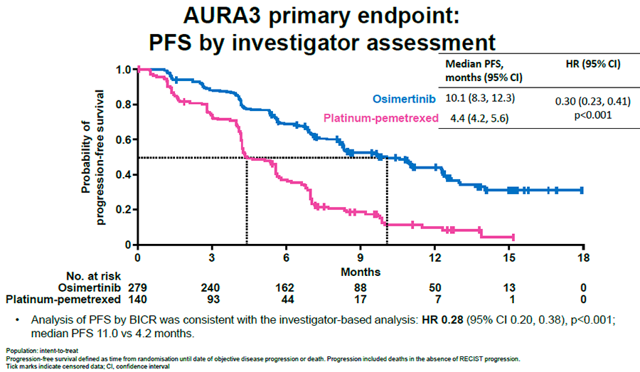
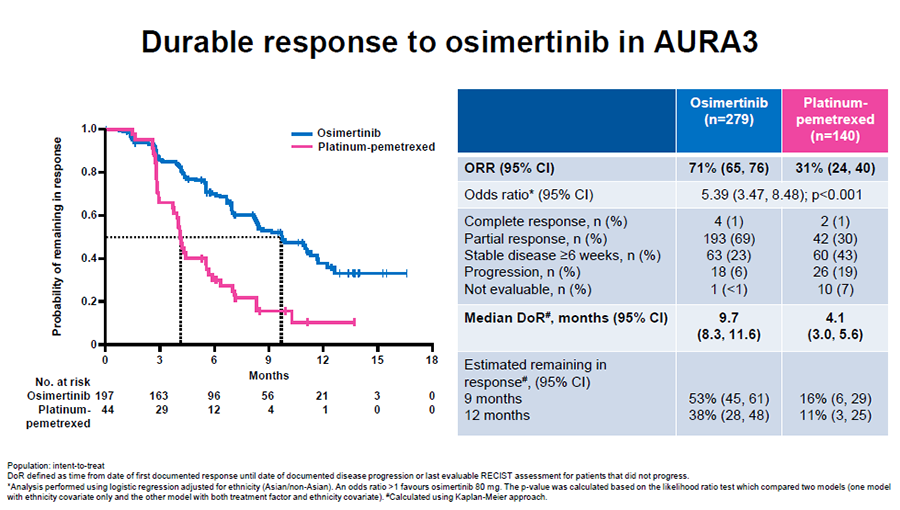
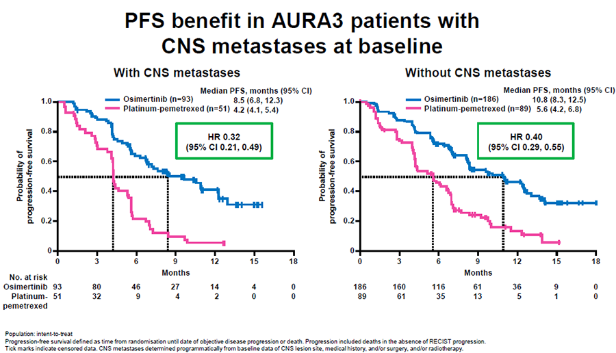
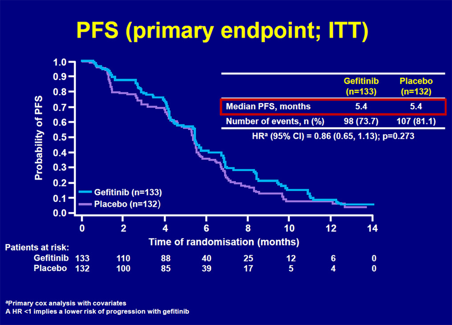

MÓDULO 5 : Tratamiento de la enfermedad avanzada en segunda línea

5.5 Inhibidores TKI de EGFR en mutación +
Inhibidores TKI de EGFR en segunda línea en pacientes con mutación de EGFR
Todos los pacientes con mutación de EGFR que son tratados con un inhibidor TKI del EGFR (gefitinib, erlotinib o afatinib), progresarán en algún momento del tratamiento, habitualmente entre los 9-14 meses.
Esto es debido a la adquisición neoplásica de mecanismos de resistencia.
El principal mecanismo de resistencia adquirido al tratamiento con TKI de 1ª o 2ª generación que ocurre hasta en el 50-60% de estos pacientes, lo constituye el desarrollo de una segunda mutación, T790M (una sustitución de treonina por metionina en el exón 20).
También se han descrito otras mutaciones de resistencia menos frecuentes (D716Y, L747S, T845A) y otros mecanismos de resistencia como la activación de vías de señalización mediadas por otros oncogenes como la amplificación de MET, HER2 y CRKL(hasta en un 20%), mutaciones de PIK3CA, KRAS O BRAF, sobreexpresión de AXL, transformación histológica a carcinoma microcítico o transición mesenquimal. Hasta en un 30% de casos, las causas de la progresión son desconocidas.
Mecanismos moleculares de resistencia adquirida a EGFR TKI:

La mutación T790M produce un cambio conformacional en el receptor del EGFR, impidiendo que se una el TKI. Esta mutación restauraría la afinidad del receptor del EGF por el ATP, dando lugar a una menor unión de los TKIs que compiten con el ATP por sus sitios de unión al receptor.
Esta mutación T790M constituye el principal mecanismo de resistencia a TKI y ocurre en algo más del 50% de los casos.
Existen inhibidores TKI del EGFR tercera generación, como osimertinib (AZ9291), rociletinib (CO-1686), HM61713, EGF816 o ASP8273 que son selectivos para la mutación T790M de resistencia y han demostrado actividad significativa en distintos ensayos en pacientes con resistencia adquirida a la TKI del EGFR de primera y segunda generación.
Presentan también un menor perfil de toxicidad comparados con los TKI de primera o segunda generación, ya que sólo reconocen al EGFR mutado y no al wild-type, mostrando una menor incidencia de diarrea y rash.
Hasta la fecha osimertinib es el único fármaco aprobado en este subgrupo de pacientes.
Osimertinib en segunda línea en pacientes con mutación de EGFR:
Osimertinib es un Inhibidor de la Tirosin Quinasa (TKI) de tercera generación. Es un inhibidor irreversible de los Receptores del Factor de Crecimiento Epidérmico (EGFRs) que albergan mutaciones sensibilizantes (EGFRm) y mutación T790M de resistencia a los TKI.
Osimertinib está indicado para el tratamiento de pacientes adultos con cáncer de pulmón no microcítico (CPNM) localmente avanzado o metastásico con mutación positiva del receptor del factor de crecimiento epidérmico (EGFR) T790M.
Los datos clínicos de la eficacia de osimertinib en el tratamiento de pacientes con CPNM en PGR a un EGFR-TKI y presencia de la mutación T790M, provienen de tres estudios. Un estudio fase III (estudio AURA 3), dos estudios fase II (estudio AURA extensión y estudio AURA2) y un estudio fase I (estudio D5160C00001; AURA). El estudio AURA extensión (N=201) objetivó una TR del 62%, una mediana de SLP de 12.3 m y una mediana de duración de respuesta de 15.2 meses. El estudio AURA 2 (N=210) objetivó una TR del 70%, una mediana de SLP de 9.9 m y una mediana de duración de respuesta de 11.4 meses.
El estudio fase III AURA 3 comparó osimertinib frente a un doblete de platino en pacientes con CNMP localmente avanzado o metastásico que habían progresado tras una primera línea con EGFR TKI y cuyo tumor expresaba la mutación T790M en el gen EGFR.
El análisis principal de eficacia mostró un resultado estadísticamente significativo y clínicamente relevante de SLP en favor de osimertinib. La mediana de SLP fue de 10,2 meses en el brazo de osimertinib frente a 4,4 meses en el brazo de quimioterapia (HR: 0,30, IC95%: 0,23 – 0,41, p < 00001).
La TR fue del 71% para osimertinib y del 31% para QT (HR: 5.39, IC95%: 3,46 – 8,48).
Osimertinib demostró mejorar la calidad de vida con respecto a la quimioterapia. Los pacientes en tratamiento con osimertinib experimentaron una mejoría de los síntomas de tos, disnea, dolor de pecho, fatiga y pérdida de apetito. Osimertinib también demostró una mayor TR y SLP a nivel de SNC: 70%, en el brazo de osimertinib frente a 31% con QT.
Este estudio ha determinado que en pacientes con mutación de EGFR que hayan progresado a un TKI en primera línea haya que determinar si presentan o no la mutación T790M, ya que osimertinib debe ser administrado solamente en pacientes con mutación EGFR-T790M positiva.
Para llevar a cabo esta determinación se debe usar un test validado para determinar el estado de la mutación T790M a partir de DNA tumoral, de tejido o circulante en el plasma. Si se emplea una determinación a partir de plasma y resulta negativa, es aconsejable realizar una determinación en tejido, de ahí el papel de la rebiopsia en este subgrupo de pacientes. En la actualidad, la disponibilidad de los test de diagnóstico para EGFR T790M es baja. Este hecho puede suponer una limitación en el uso de osimertinib en algunos centros.
El estudio AURA 3 demostró superioridad de osimertinib frente a QT en pacientes con mutación de EGFR que hayan progresado a un TKI en primera línea y presenten la mutación T790M. Por tanto, se recomienda la re-biopsia tras la progresión a un EGFR-TKI de 1ª o 2ª generación para determinar si existe o no la mutación de resistencia T790M.



Quimioterapia tras progresión a un EGFR-TKI en pacientes con mutación de EGFR
El tratamiento estándar en los pacientes EGFR mutados que progresan un TKI de 1ª o 2ª generación (gefitinib, erlotinib o afatinib) y no se conoce el estado de la mutación de resistencia T790M o ésta es negativa, es la quimioterapia basada en un doblete de platino, con TR de alrededor del 31% y mediana de SLP de alrededor de 5.4 m.
Inevitablemente, todos los pacientes con mutación T790M acabarán progresando a osimertinib. Tras progresión a osimertinib por el momento el único tratamiento disponible es la QT basada en un doblete de platino. El conocimiento de la resistencia a osimertinib todavía es limitado pero entre los principales mecanismos conocidos hasta la fecha destacan: desarrollo de la mutación C797S (C797 es el sitio de unión de osimertinib al dominio TK de EGFR), pérdida de la mutación T790M, transición epitelio –mesenquimal, amplificación de MET y HER2, amplificación de YES1 y mutaciones adquiridas en KRAS, PIK3CA y HER2. Se están ensayando distintos fármacos y combinaciones que inhiben estos mecanismos de resistencia y por lo tanto, cada vez se hará más necesario en estos pacientes la realización de biopsia a la progresión que permita identificar el mecanismo de resistencia implicado para poder dirigir la estrategia terapéutica.
Ha existido mucho debate sobre la conveniencia o no de mantener a la progresión a un TKI, el tratamiento con el inhibidor TKI del EGFR durante el tratamiento con quimioterapia con el fin de seguir inhibiendo la vía del EGFR. Sin embargo, el estudio IMPRESS que compara cisplatino + pemetrexed + gefitinib vs cisplatino + pemetrexed + placebo tras la progresión a gefitinib, no ha demostrado ventaja en supervivencia libre de progresión.
El ensayo clínico fase III IMPRESS incluyó pacientes con CPNM avanzado con mutación EGFR positiva y estadio III-IV que habían progresado al tratamiento con gefitinib. Todos los pacientes recibieron cisplatino y pemetrexed, y fueron aleatorizados (1:1) para recibir gefitinib o placebo una vez al día. La variable principal de eficacia fue la SLP en la población ITT. Los resultados no mostraron diferencias entre los pacientes tratados con gefitinib y aquellos tratados con placebo en términos de SLP y TRO.
En el brazo de Placebo + pemetrexed/cisplatino (N=132) la TRO fue del 25,0 % (IC 95 %: 17,9 %-33,3 %), la mediana de SLP fue de 5,4 meses (IC 95 %: 4,6-5,5) y la mediana de SG fue de 17,2 meses (IC 95 %: 15,6-NE).
El estudio IMPRESS no evaluó los resultados en la población con mutación T790M positiva, sin embargo dado el mecanismo de acción de la quimioterapia, no sería de esperar una diferencia en los resultados comparado con la población global evaluada.
Importante: Por tanto, no se recomienda el mantenimiento del EGFR-TKI durante el tratamiento con quimioterapia.
